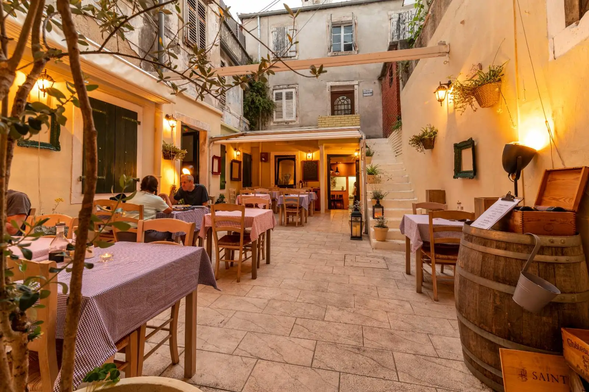
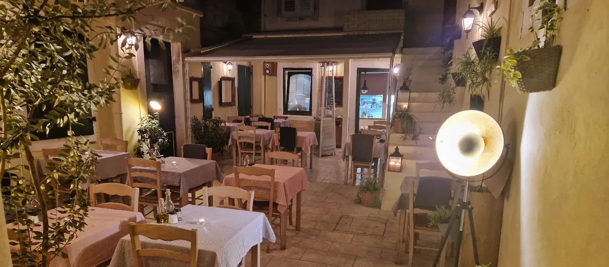
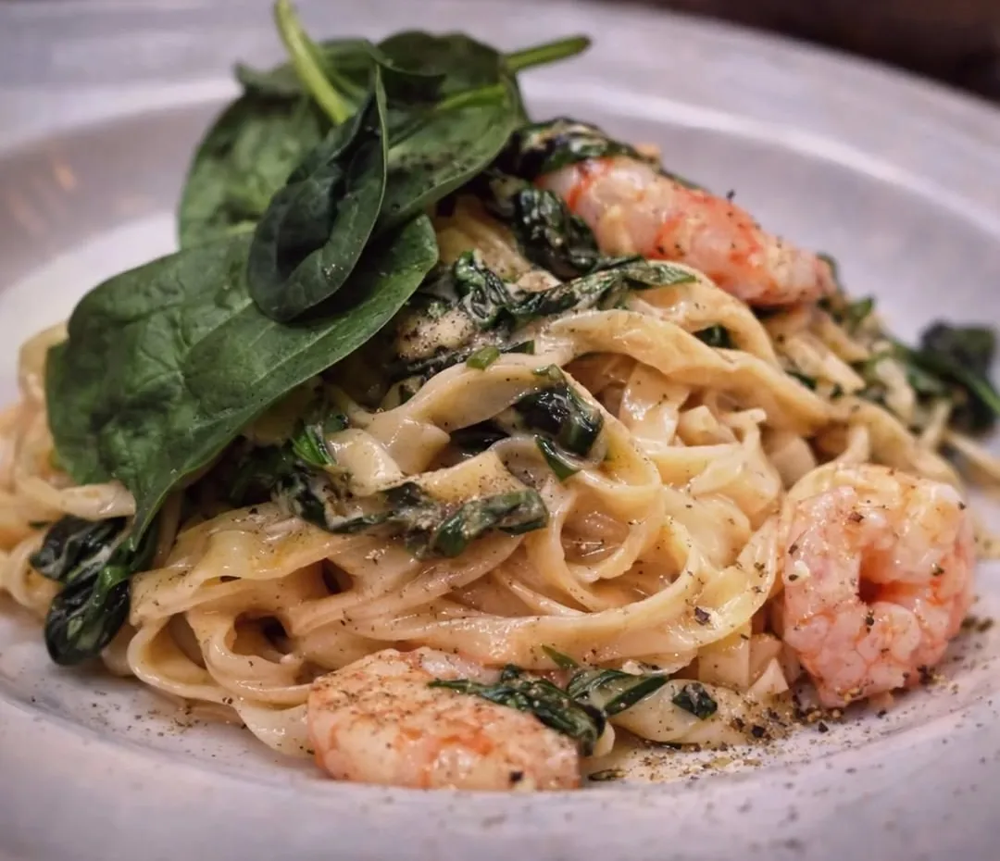
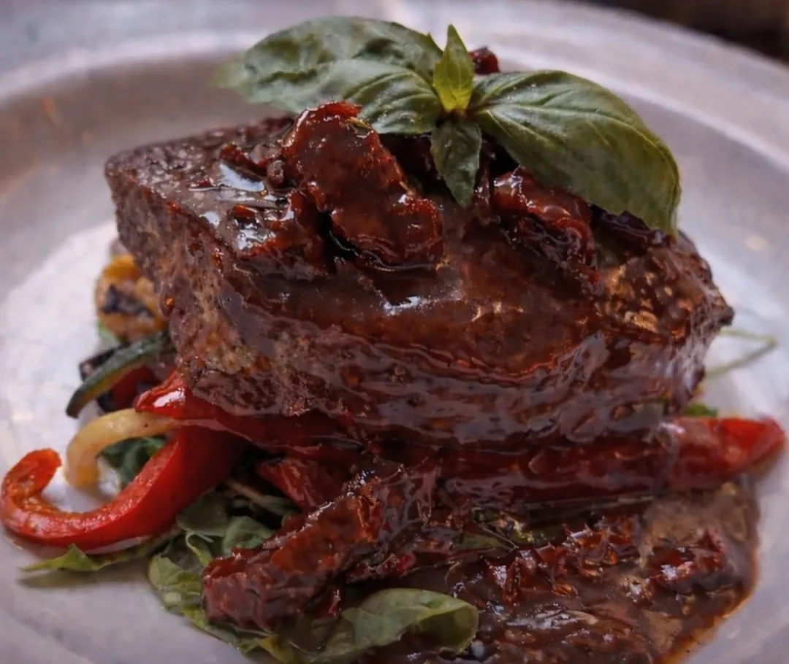
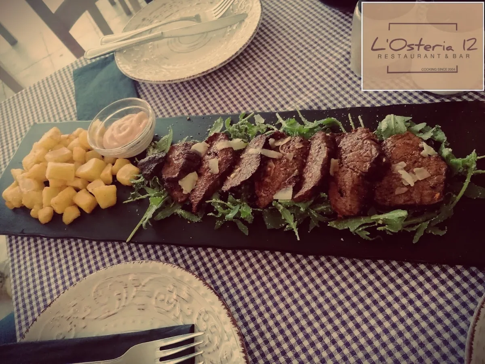
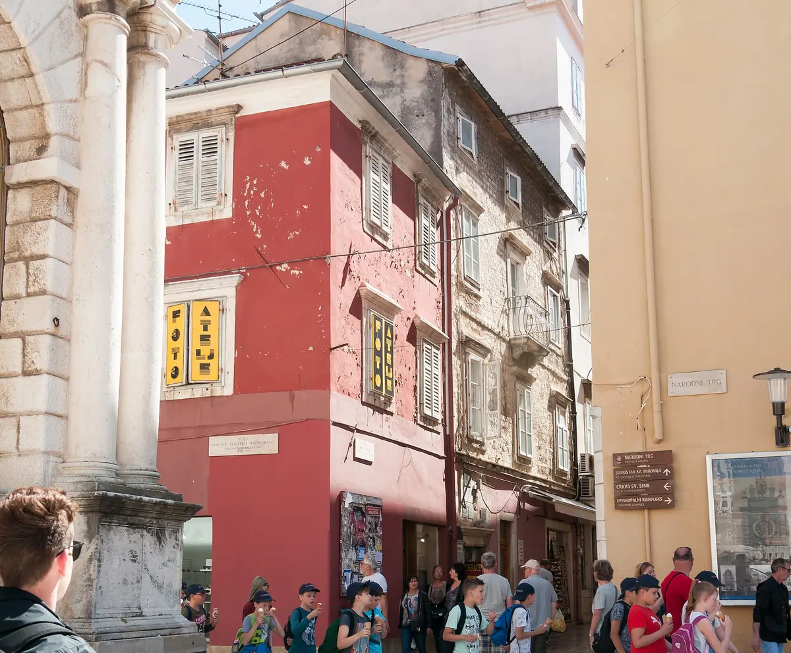

Talijanska i mediteranska kuhinja u kamenom dvorištu na Špire Brusine 12, dvije minute od Narodnog trga. Kuhamo od 2004.
Malo dvorište iza kamenih zidova, dvanaest koraka od vreve starog grada. Kuhinja je otvorena prema stolovima pa vidite kako nastaje vaš tanjur. Ne primamo rezervacije. Dođete, sjednete kad se stol oslobodi i ostanete koliko želite.
L'Osteria 12 Restaurant & Bar, Zadar

Ime nosimo po adresi: Ulica Špire Brusine 12, u starom gradu Zadra.
L'Osteria 12 Restaurant & Bar mali je restoran skriven u kamenom dvorištu, odvojenom od prometnih ulica poluotoka. Stolova nije mnogo, kuhinja gleda na dvorište, a gužva se najbolje izbjegne dolaskom odmah po otvaranju.
Na tanjuru je talijanska i mediteranska kuhinja: tjestenina, riba i plodovi mora, meso sa žara. Ponuda se mijenja, pa za dnevne prijedloge i alergene pitajte osoblje. Kartice primamo, rezervacije ne. Mangiare, bere, vivere.
Dvorište, tanjuri i stari grad oko nas.




Nalazimo se u starom gradu Zadra, na poluotoku, u Ulici Špire Brusine 12. Od Narodnog trga dijeli nas oko 130 metara, otprilike dvije minute hoda, a od Foruma i crkve svetog Donata oko 350 metara. Dolazi se pješice, stari grad je zatvoren za promet.
Radimo sezonski. U sezonu 2026. otvoreni smo od travnja.
Odgovori na pitanja koja nam gosti najčešće postavljaju.
Ponedjeljak do subote, nedjeljom zatvoreno. Bez rezervacija, samo dođite.
Gdje nas naći